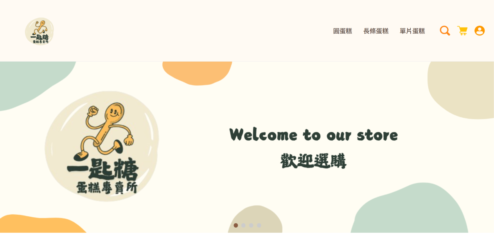
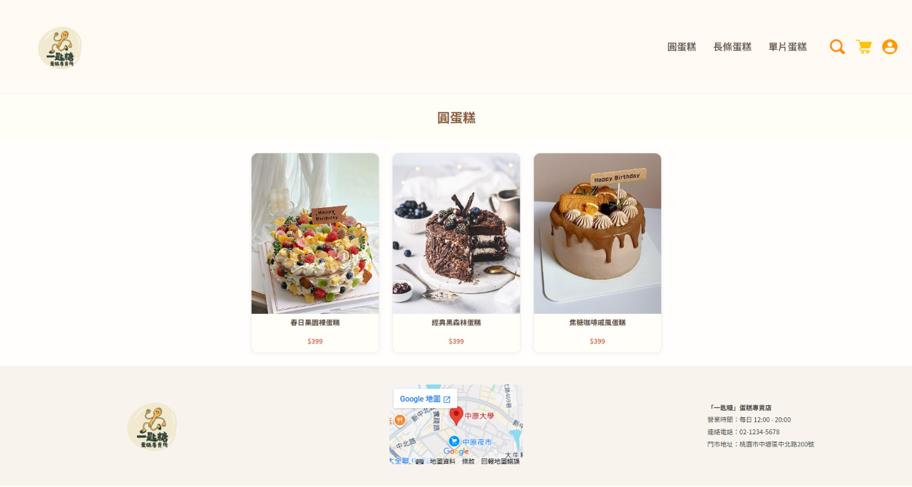
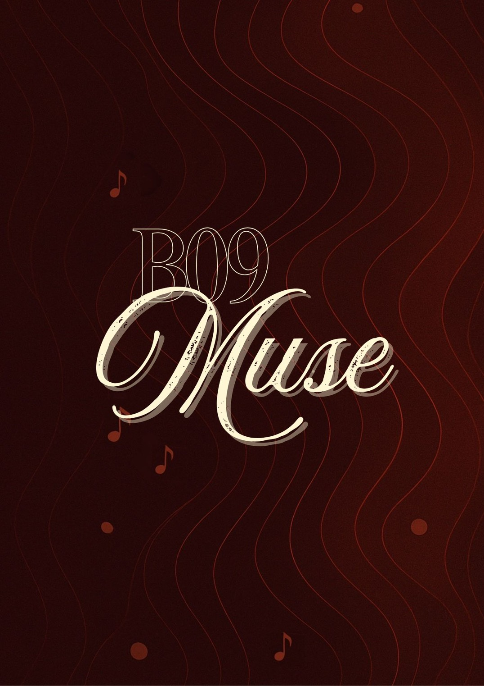

學習經歷
多媒體程式設計｜sugarspooncakes
以HTML、CSS與JavaScript製作網站前端，並使用GitHub進行版本管理，也有上台報告。



網路程式設計｜BlossomShop購物網站
以JSP、JDBC與MySQL實作購物網站的後端與資料庫串接，也有上台報告。
中原大學資訊管理學系
「チャンスが来たら 掴めよ....!!」
「一但機會來臨，就要好好把握它！」
我是中原大學資訊管理學系學生，預計2027年6月畢業。
2023年起擔任兒童程式講師，目前在蘋果芽數位科技擔任學習教練，累積了將程式概念轉化為易懂步驟的教學與溝通經驗。
在學期間，我完成資料庫設計、系統分析與JSP後端開發等課程實作、畢業專題Muse中負責歌詞端的AI文本分析。
此外，我也曾在國小與高中舉辦程式一日營，完整參與從企劃到執行的流程。
我期望在實習中將所學應用於實務，持續累積系統分析與開發的能力。

專案簡介
Muse協助品牌找到適合廣告的歌曲。品牌提供調性、企劃與Demo音檔，平台透過AI從現有歌曲中推薦適配的歌曲，並建議歌詞改編方向；另有「試聽所」讓聽眾試聽品牌的改編作品並投票。
我負責的部分：歌詞端AI分析
以HTML、CSS與JavaScript製作網站前端，並使用GitHub進行版本管理，也有上台報告。


以JSP、JDBC與MySQL實作購物網站的後端與資料庫串接，也有上台報告。